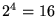
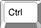
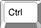

| Purchase | Copyright © 2002 Paul Sheer. Click here for copying permissions. | Home |
|
|
| |
This chapter explains some basics that most computer users will already be familiar with. If you are new to UNIX, however, you may want to gloss over the commonly used key bindings for reference.
The best way of thinking about how a computer stores and manages information is to ask yourself how you would. Most often the way a computer works is exactly the way you would expect it to if you were inventing it for the first time. The only limitations on this are those imposed by logical feasibility and imagination, but almost anything else is allowed.
When you first learned to count, you did so with 10 digits. Ordinary numbers (like telephone numbers) are called ``base ten'' numbers. Postal codes that include letters and digits are called ``base 36'' numbers because of the addition of 26 letters onto the usual 10 digits. The simplest base possible is ``base two'' which uses only two digits: 0 and 1. Now, a 7-digit telephone number has possible combinations. A postal code with four characters has possible combinations. However, an 8-digit binary number only has possible combinations.
Since the internal representation of numbers within a computer is binary and since it is rather tedious to convert between decimal and binary, computer scientists have come up with new bases to represent numbers: these are ``base sixteen'' and ``base eight,'' known as hexadecimal and octal, respectively. Hexadecimal numbers use the digits 0 through 9 and the letters A through F, whereas octal numbers use only the digits 0 through 7. Hexadecimal is often abbreviated as hex.
Consider a 4-digit binary number. It has  possible combinations
and can therefore be easily represented by one of the 16 hex
digits. A 3-digit binary number has possible combinations and can
thus be represented by a single octal digit. Hence, a binary
number can be represented with hex or octal digits without much
calculation, as shown in Table 2.1.
A binary number 01001011 can be represented in hex as 4B and in octal as 113 by simply separating the binary digits into groups of four or three, respectively.
In UNIX administration, and also in many programming languages, there is often the ambiguity of whether a number is in fact a hex, decimal, or octal number. For instance, a hex number 56 is 01010110, but an octal number 56 is 101110, whereas a decimal number 56 is 111000 (computed through a more tedious calculation). To distinguish between them, hex numbers are often prefixed with the characters ``0x'', while octal numbers are prefixed with a ``0''. If the first digit is 1 through 9, then it is a decimal number that is probably being referred to. We would then write 0x56 for hex, and 056 for octal. Another representation is to append the letter H, D, O, or B (or h, d, o, b) to the number to indicate its base.
UNIX makes heavy use of 8-, 16-, and 32-digit binary numbers, often representing them as 2-, 4-, and 8-digit hex numbers. You should get used to seeing numbers like 0xffff (or FFFFh), which in decimal is 65535 and in binary is 1111111111111111.
Common to every computer system invented is the file. A file holds a single contiguous block of data. Any kind of data can be stored in a file, and there is no data that cannot be stored in a file. Furthermore, there is no kind of data that is stored anywhere else except in files. A file holds data of the same type, for instance, a single picture will be stored in one file. During production, this book had each chapter stored in a file. It is uncommon for different types of data (say, text and pictures) to be stored together in the same file because it is inconvenient. A computer will typically contain about 10,000 files that have a great many purposes. Each file will have its own name. The file name on a LINUX or UNIX machine can be up to 256 characters long.
The file name is usually explanatory--you might call a letter you wrote to your friend something like Mary_Jones.letter (from now on, whenever you see the typewriter font [A style of print: here is typewriter font.], it means that those are words that might be read off the screen of the computer). The name you choose has no meaning to the computer and could just as well be any other combination of letters or digits; however, you will refer to that data with that file name whenever you give an instruction to the computer regarding that data, so you would like it to be descriptive. [It is important to internalize the fact that computers do not have an interpretation for anything. A computer operates with a set of interdependent logical rules. Interdependent means that the rules have no apex, in the sense that computers have no fixed or single way of working. For example, the reason a computer has files at all is because computer programmers have decided that this is the most universal and convenient way of storing data, and if you think about it, it really is.]
The data in each file is merely a long list of numbers. The size of the file is just the length of the list of numbers. Each number is called a byte. Each byte contains 8 bits. Each bit is either a one or a zero and therefore, once again, there are possible combinations. Hence a byte can only hold a number as large as 255. There is no type of data that cannot be represented as a list of bytes. Bytes are sometimes also called octets. Your letter to Mary will be encoded into bytes for storage on the computer. We all know that a television picture is just a sequence of dots on the screen that scan from left to right. In that way, a picture might be represented in a file: that is, as a sequence of bytes where each byte is interpreted as a level of brightness--0 for black and 255 for white. For your letter, the convention is to store an A as 65, a B as 66, and so on. Each punctuation character also has a numerical equivalent.
A mapping between numbers and characters is called a character mapping or a character set. The most common character set in use in the world today is the ASCII character set which stands for the American Standard Code for Information Interchange. Table 2.2 shows the complete ASCII mappings between characters and their hex, decimal, and octal equivalents.
The second thing common to every computer system invented is the command.
You tell the computer what to do with single words typed into the
computer one at a time. Modern computers appear to have done away with the typing of
commands by having beautiful graphical displays that work with a mouse, but,
fundamentally, all that is happening is that commands are being secretly typed
in for you. Using commands is still the only way to have complete power over
the computer. You don't really know anything about a computer until you come
to grips with the commands it uses. Using a computer will very much involve
typing in a word, pressing  , and then waiting for the computer
screen to spit something back at you. Most commands are typed in to do something
useful to a file.
, and then waiting for the computer
screen to spit something back at you. Most commands are typed in to do something
useful to a file.
Turn on your LINUX box. After a few minutes of initialization, you will
see the login prompt. A prompt
is one or more characters displayed on the screen that you are expected to
follow with some typing of your own. Here the prompt may state the name of the computer
(each computer has a name--typically
consisting of about eight lowercase letters) and then the word
login:.
LINUX machines now come
with a graphical desktop by default (most of the time),
so you might get a pretty graphical login with the same effect.
Now you should type your login name--a sequence of about eight lower
case letters that would have been assigned to you by your computer
administrator--and then press the Enter (or Return) key (that is, ).
A password prompt will appear after which you should type your password. Your password may be the same as your login name. Note that your password will not be shown on the screen as you type it but will be invisible. After typing your password, press the Enter or Return key again. The screen might show some message and prompt you for a log in again--in this case, you have probably typed something incorrectly and should give it another try. From now on, you will be expected to know that the Enter or Return key should be pressed at the end of every line you type in, analogous to the mechanical typewriter. You will also be expected to know that human error is very common; when you type something incorrectly, the computer will give an error message, and you should try again until you get it right. It is uncommon for a person to understand computer concepts after a first reading or to get commands to work on the first try.
Now that you have logged in you will see a shell prompt--a shell is the place where you can type commands. The shell is where you will spend most of your time as a system administrator [Computer manager.], but it needn't look as bland as you see now. Your first exercise is to change your password. Type the command passwd. You will be asked for a new password and then asked to confirm that password. The password you choose should consist of letters, numbers, and punctuation--you will see later on why this security measure is a good idea. Take good note of your password for the next time you log in. Then the shell will return. The password you have chosen will take effect immediately, replacing the previous password that you used to log in. The password command might also have given some message indicating what effect it actually had. You may not understand the message, but you should try to get an idea of whether the connotation was positive or negative.
When you are using a computer, it is useful to imagine yourself as being in different places within the computer, rather than just typing commands into it. After you entered the passwd command, you were no longer in the shell, but moved into the password place. You could not use the shell until you had moved out of the passwd command.
Type in the command ls. ls is short for list, abbreviated to two letters like most other UNIX commands. ls lists all your current files. You may find that ls does nothing, but just returns you back to the shell. This would be because you have no files as yet. Most UNIX commands do not give any kind of message unless something went wrong (the passwd command above was an exception). If there were files, you would see their names listed rather blandly in columns with no indication of what they are for.
The following keys are useful for editing the command-line. Note that UNIX has had a long and twisted evolution from the mainframe, and the , and other keys may not work properly. The following keys bindings are however common throughout many LINUX applications:
 ).
).
 ).
).
 , Ctrl for , and
Shift for , mean to hold the key down through the pressing and
releasing of the letter key. These are known as key modifiers.
Note also, that the Ctrl key is always case insensitive; hence
Ctrl-D (i.e. --
, Ctrl for , and
Shift for , mean to hold the key down through the pressing and
releasing of the letter key. These are known as key modifiers.
Note also, that the Ctrl key is always case insensitive; hence
Ctrl-D (i.e. -- ) and Ctrl-d
(i.e. -) are identical.
The Alt modifier (i.e., -?) is in fact a
short way of pressing and releasing before
entering the key combination; hence Esc then f is the
same as Alt-f--UNIX is different from other operating
systems in this use of Esc. The Alt modifier is not case
insensitive although some applications will make a special effort to
respond insensitively. The Alt key is also sometimes referred
to as the Meta key. All of these keys are sometimes referred to
by their abbreviations: for example, C-a for Ctrl-a, or
M-f for Meta-f and Alt-f. The Ctrl modifier
is sometimes also designated with a caret: for example,
^C for Ctrl-C.
) and Ctrl-d
(i.e. -) are identical.
The Alt modifier (i.e., -?) is in fact a
short way of pressing and releasing before
entering the key combination; hence Esc then f is the
same as Alt-f--UNIX is different from other operating
systems in this use of Esc. The Alt modifier is not case
insensitive although some applications will make a special effort to
respond insensitively. The Alt key is also sometimes referred
to as the Meta key. All of these keys are sometimes referred to
by their abbreviations: for example, C-a for Ctrl-a, or
M-f for Meta-f and Alt-f. The Ctrl modifier
is sometimes also designated with a caret: for example,
^C for Ctrl-C.
Your command-line keeps a history of all the commands you have typed in. Ctrl-p and Ctrl-n will cycle through previous commands entered. New users seem to gain tremendous satisfaction from typing in lengthy commands over and over. Never type in anything more than once--use your command history instead.
Ctrl-s is used to suspend the current session, causing the keyboard to stop responding. Ctrl-q reverses this condition.
Ctrl-r activates a search on your command history. Pressing Ctrl-r in the middle of a search finds the next match whereas Ctrl-s reverts to the previous match (although some distributions have this confused with suspend).
The Tab command is tremendously useful for saving key strokes. Typing a partial directory name, file name, or command, and then pressing Tab once or twice in sequence completes the word for you without your having to type it all in full.
You can make Tab and other keys stop beeping in the irritating way that they do by editing the file /etc/inputrc and adding the line
|
set bell-style none |
and then logging out and logging in again. (More about this later.)
There are several special keys interpreted directly by the LINUX console or text mode interface. The Ctrl-Alt-Del combination initiates a complete shutdown and hardware reboot, which is the preferred method of restarting LINUX.
The Ctrl-PgUp and Ctrl-PgDn keys scroll the console, which is very useful for seeing text that has disappeared off the top of the terminal.
You can use Alt-F2 to switch to a new, independent login session. Here you can log in again and run a separate session. There are six of these virtual consoles--Alt-F1 through Alt-F6--to choose from; they are also called virtual terminals. If you are in graphical mode, you will have to instead press Ctrl-Alt-F? because the Alt-F? keys are often used by applications. The convention is that the seventh virtual console is graphical, so Alt-F7 will always take you back to graphical mode.
There are many ways of creating a file. Type
cat > Mary_Jones.letter
and then type out a few lines of text. You will use this file in later examples.
The
cat command is used here to write from the keyboard into a file
Mary_Jones.letter. At the end of the last line, press one more
time and then press -. Now, if you type
ls again, you will see the file
Mary_Jones.letter
listed with any other files. Type
cat Mary_Jones.letter without
the
>. You will see that the command
cat writes the contents
of a file to the screen, allowing you to view your letter. It should match exactly
what you typed in.
Although UNIX file names can contain almost any character, standards dictate that only the following characters are preferred in file names:
| A | B | C | D | E | F | G | H | I | J | K | L | M | N | O | P | Q | R | S | T | U | V | W | X | Y | Z |
| a | b | c | d | e | f | g | h | i | j | k | l | m | n | o | p | q | r | s | t | u | v | w | x | y | z |
| 0 | 1 | 2 | 3 | 4 | 5 | 6 | 7 | 8 | 9 | . | _ | - | ~ |
Hence, never use other punctuation characters, brackets, or control characters to name files. Also, never use the space or tab character in a file name, and never begin a file name with a - character.
I mentioned that a system may typically contain 10,000 files. Since it would be cumbersome if you were to see all 10,000 of them whenever you typed ls, files are placed in different ``cabinets'' so that files of the same type are placed together and can be easily isolated from other files. For instance, your letter above might go in a separate ``cabinet'' with other letters. A ``cabinet'' in computer terms is actually called a directory. This is the third commonality between all computer systems: all files go in one or another directory. To get an idea of how directories work, type the command mkdir letters, where mkdir stands for make directory. Now type ls. This will show the file Mary_Jones.letter as well as a new file, letters. The file letters is not really a file at all, but the name of a directory in which a number of other files can be placed. To go into the directory letters, you can type cd letters where cd stands for change directory. Since the directory is newly created, you would not expect it to contain any files, and typing ls will verify such by not listing anything. You can now create a file by using the cat command as you did before (try this). To go back to the original directory that you were in, you can use the command cd .. where the .. has the special meaning of taking you out of the current directory. Type ls again to verify that you have actually gone up a directory.
It is, however, bothersome that we cannot tell the difference between files and directories. The way to differentiate is with the ls -l command. -l stands for long format. If you enter this command, you will see a lot of details about the files that may not yet be comprehensible to you. The three things you can watch for are the file name on the far right, the file size (i.e., the number of bytes that the file contains) in the fifth column from the left, and the file type on the far left. The file type is a string of letters of which you will only be interested in one: the character on the far left is either a - or a d. A - signifies a regular file, and a d signifies a directory. The command ls -l Mary_Jones.letter will list only the single file Mary_Jones.letter and is useful for finding out the size of a single file.
In fact, there is no limitation on how many directories you can create within each other. In what follows, you will glimpse the layout of all the directories on the computer.
Type the command cd /, where the / has the special meaning to go to the topmost directory on the computer called the root directory. Now type ls -l. The listing may be quite long and may go off the top of the screen; in that case, try ls -l | less (then use PgUp and PgDn, and press q when done). You will see that most, if not all, are directories. You can now practice moving around the system with the cd command, not forgetting that cd .. takes you up and cd / takes you to the root directory.
At any time you can type pwd ( present working directory) to show the directory you are currently in.
When you have finished, log out of the computer by using the logout command.